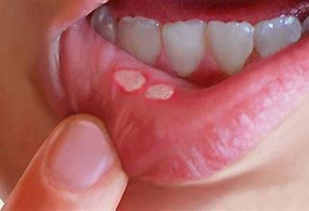

Oral cancer was identified as the most prevalent type of cancer among neoplasms around the world, with squamous cell carcinomas accounting for the majority of cases in developing nations, where they account for about two-thirds of cases. Men are more likely than women to develop oral cancer, which includes malignancies of the lip, oral cavity, and oropharynx. Oral cancer, which ranks as the 16th most common cancer in the world, is the 15th main cause of death among in
Oral cancer's etiology, or causes, may be multifactorial and comprise environmental, behavioral, and genetic elements. The most prevalent and well-known risk factors for oral cancer are smoking, chewing betel nuts, alcohol use, viral and fungi infections, tertiary syphilis, radiation exposure, and genetic elements.
There are two common critical signs in cancer: induration and fixation. The most typical oral cancer indications include induration and fixation, red, and white patches, and inflammatory lesions with rolling margins and tissue brittleness.
The condition is characterized by numbness or pain, deteriorated teeth, and apposition of tissues to deeper or upper-layer mucosa, lymph node expansion, dysphagia, weight loss, bleeding in the mouth, A recurring oral sore or a lump that hurts or fits poorly when wearing dentures, chewing, swallowing, or moving the tongue or jaw, Recurring bad breath.
The TNM stage approach is most commonly used for tumor categorizing and it consists of three main components the degree of tumor proliferation, the dissemination of the tumor to nearby lymph nodes, and the spread of the tumor to distant regions.
Early detection of cancers is critical since it can be an important aspect of a positive prognosis. Because tumors are not visible during clinical testing in the early stages or during the precancerous condition, this can be performed utilizing biomarkers and imaging techniques. Magnetic resonance. Magnetic resonance imaging and computed tomography are the most often utilized methods. According to the current tumor-node-metastasis paradigm, CT and MRI are effective tools for diagnosing and monitoring head and neck malignancies.
Treatment options for oral cancer include surgery and radiotherapy along with Targeted therapy entails blocking growth factor receptors. Blocking particular enzymes, modifying protein functions, and inducing apoptosis Virotherapy, in which viruses are employed to block virus proliferation, and gene therapy are two innovative cancer treatment approaches.

